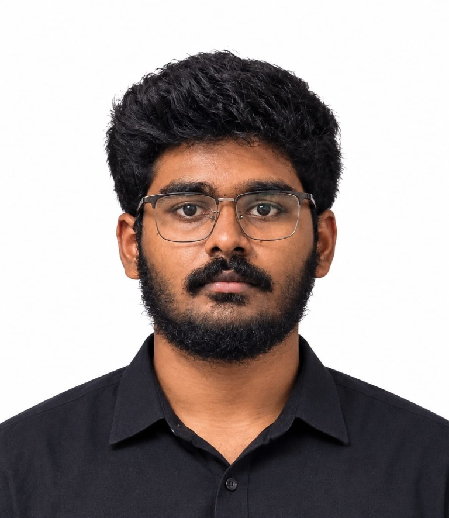

B.Sc. (Hons.) Agriculture
Relevant coursework includes bioinoculants and quality standards, plant breeding, soil science, agronomy, crop protection, and agricultural cooperative finance.
Agriculture · Agroecology · Digital Agriculture
I’m Arivuselvan, an agriculture undergraduate interested in agroecology, farmer-centered digital tools, and making agricultural knowledge useful and accessible.

01 / Education
Building a strong foundation in crop, soil, and plant sciences while learning directly from farming communities and field settings.
Relevant coursework includes bioinoculants and quality standards, plant breeding, soil science, agronomy, crop protection, and agricultural cooperative finance.
02 / Experience
Practical experience across agricultural extension, horticulture, livestock outreach, and digital agriculture in Tamil Nadu.
Learned about management and maintenance of public horticultural gardens, including the Botanical Garden and Lake Garden, under the Horticulture Officer.
Supported farmer communication at a livestock health and infertility camp, helping explain check-ups and medicine distribution under veterinary staff guidance.
03 / Projects
Independent concepts and academic work connecting agricultural knowledge with practical needs.
An agriculture knowledge-sharing platform concept connecting farmers, students, researchers, and professionals through learning resources and discussion groups.
Explores expert content, agricultural communities, job and internship information, and access in low-connectivity settings.
Independent conceptConcept development for a conversational agricultural assistant offering farmers accessible, locally relevant crop and farm-management guidance.
Concept developmentAcademic work on bioinoculant production technology and FCO quality standards, alongside fieldwork with a Primary Agricultural Co-operative Bank.
Agriculture coursework04 / Skills
A mix of agricultural foundations, field experience, digital agriculture, and clear communication.
05 / Certificates
Certificates and participation that reflect continued learning across agriculture and related fields.
Awarded to Arivuselvan in recognition of participation in the GUVI webinar.
This webinar expanded my understanding of business analysis and its role in structured, data-informed problem-solving.
View certificateRecognizes active participation in testing and evaluating AI-assisted agronomic advisory in real and simulated agricultural contexts.
This field trial strengthened my ability to assess AI-generated agronomic guidance using agroecological reasoning and practical field observations.
View certificate
06 / Contact
Based in Chennai, Tamil Nadu, India.